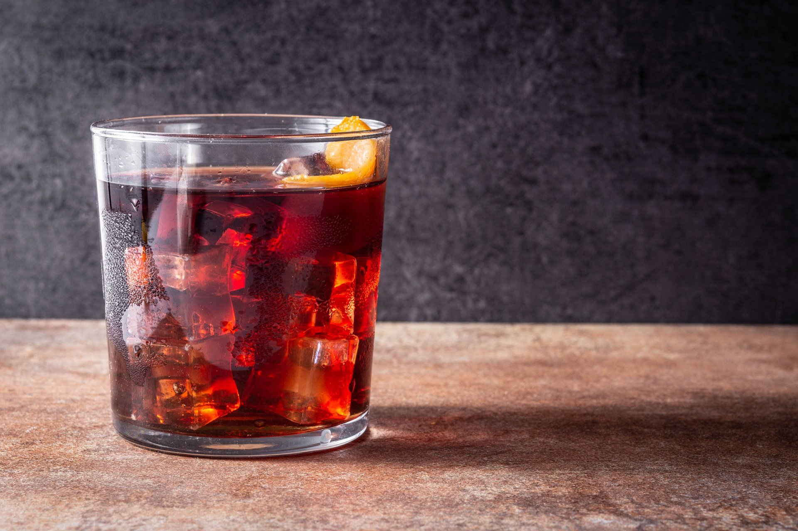

Boulevardier

Description
Make a classic boulevardier cocktail if you're a fan of negronis.
It's similar, but made with bourbon instead of gin for a more harmonious blend
Ingredients
- 25ml bourbon
- 25ml sweet vermouth
- 25ml Campari
- ice
Steps
- Pour the bourbon, vermouth and Campari into a mixing glass, jug or cocktail shaker.
Add a large handful of ice, and stir until the outside of the glass feels very cold
- Strain the cocktail into an ice-filled tumbler, and garnish with a twist of orange peel
Home